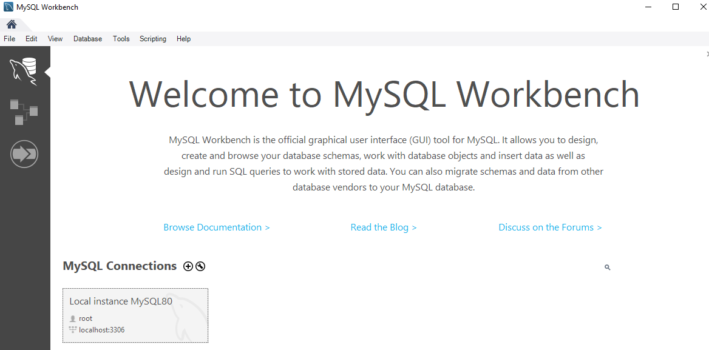

Before I answer this question we first need to understand what a Database is.
A database is a collection of data in a format that can easily be accessed. In order to
manage a Database we use a software application called Database Management System (DBMS),
we use DBMS to easily view or edit our Database.
Databases are split in two categories, relational databases and not relational databases (noSQL).
Relational Databases store information in tables that are related to one another:
SQL (Structured Query language) is a language that is used to work with Relational Management Systems (RDBMS),
mySQL is one of the most popular RDBMS.
Not Relational Databases on the other hand have their own Database Management Systems, and
are very different from Relational Databases. noSQL is any database that's not relational,
like JSON for example, we however only care about Relational Databases for now.
You should then click on the image under the 'recommended download' text, it will
take you to another page, then simply download the first installer, it will ask you to
sign up after you do that but there should be an option to skip.
There are many steps to the installation process, they are easy however, if you need help
here is a video to help you: https://youtu.be/7S_tz1z_5bA?t=588
After you are done MySQL Workbench should open, if not you can search for it in windows
search bar, here is what you should be seeing after you open it:

Since you finished installation you should already created a connection before, if there is
no connection however you can create one by clicking the plush sign, it shouldn't be hard, just
set an admin password, test the connection and you are done, the user name should be root
however or else you will be denied access, that's because root is a user account for
administrative purposes, and typically has the highest access rights on the system.
Anyway, after you are done click on the connection to
start working.
Preparations for the following lessons
So, first let's get familiar with the workbench interface, here is what
it looks like:
I have marked the different areas of the editor in the image so it's easier
to explain them. At the top right side of the editor there are buttons that can close and
open those areas, some of these areas will only rearly be needed so we will have them closed
most of the time.
So, there are two buttons right under where it writes file and edit,
right above the red marked area at the left, the first button creates
a new tab for executing queries, there is already a tab open inside the red marked area in the
middle, this is where we will spend most of our time, writing queries to view and edit our data.
The button at the right opens an SQL file in a new query tab, we will
use that button later. Next to those buttons there are a bunch of other buttons for
creating a DataBase, creating a new table and so on.
On the left side we got our navigator panel with two tabs, Administrative
which is the tab that is open in the image and Schemas. We use the Administrative tab
to do administrative work such as starting the server, stopping the server, importing
or exporting data and so on. The Schemas tab shows the databases we have in the current
database server, by default it should already have at least one DataBase called Sys,
which MySQL uses internally to do it's work, so don't mind it.
The area at the down left corner shows information about objects you select
in Schemas tab, and the Output area at it's right outputs information when running queries,
it's like console in web browsers pretty much. Lastly,
we don't care about SQL Additions at the right area yet so fell free to close it.
So, for the following lessons we will need DataBases to work
with, so we will use a script that will create some cool DataBases
for us, to do this first download this zip folder
and extract it, inside there will be a bunch of scripts that generate DataBases for you,
for now however we will use the first one called create-databases, I need you to remember
about the buttons I explained before, the second button is used to add SQL files in a new
query tab so use it to add the file:
Now click the lightning symbol to run the code, I recommend
you keep output area open to see the queries complete one after another and
know when it's over. When the script is done open Schemas tab and there
should be a refresh symbol, the databases have been created but the tab may hasn't,
refreshing it will update the tab:
Let's take a look inside a DataBase now:
Table are used to store data, views are like virtual tables we can create to
present data of multiple tables together, we will speak more about this in the future.
Stored procedures and functions are like little programs that are stored
inside of our DataBase for querying data. For example, we could have a stored procedure for
getting all the customers in a given city, and then we could call that stored procedure
and say "Hey, give me all the customers in San Francisco" and this would
return all the customers in San Francisco.
When hovering your mouse over a table three options should appear, click
the one that looks like a diagram and the table will be displayed, as an excersize try
checking out the tables and how they are related with each other. I will try not
going over too much details about data designing in the following lessons but here is
a great video I watched that taught me a lot:
Introduction to basics about retrieving data
The SELECT statement is used to retrieve data from a single table, to use
this statement however MySQL needs to know which Database we run this query for,
in the Schemas tab a selected Database will be displayed with bold font, to
select a DataBase either double click on it or use the the USE statement, like
in the example:
Now let me show you an example of the SELECT statement:
So, whenever you have multiple SQL statements you need to terminate
each statement with a semicolon, if I removed the semicolon next to USE statement
then everything I wrote next wouldn't work, by the way line breaks in SQL are ignored
so you don't need to have them I only do it to make it easier to read. Anyway,
after the SELECT statement I wrote the names of the columns I want to select,
then I used the FROM keyword to select the table from which we want to select the columns.
If we wanted to select all the columns we could use the * symbol like this:
By the way, to execute all queries without clicking the lightning you can
press ctrl shift and enter, it's a shortcut, and if you only want to select one of your queries
hold right click and select the queries you want to run.
There are more keywords you can use when selecting data however, note
that those keywords are added in a specific order, the WHERE keyword lets
you add a requirement so that only rows that meet this requirement are
selected, see example bellow:
Lastly, the ORDER BY keyword lets us specify in what order we want our data to be displayed
for example, by default it orders the rows by id, but we could order them alpabetically by name,
or by birthdate so that they are displayed from older to younger:
I commented out the WHERE keyword, you can
make a comment line by typing -- at the start of the line.
Note that WHERE keyword should always be written after the FROM keyword,
if you write it after the ORDER BY keyword it won't work.
All those keywords I have spokem about are optional,
SELECT can be used on it's own, it only needs the FROM keyword when
referencing data on tables, but SELECT doesn't necessarily have to
select data:
The AS keyword is what we call an Alias, it
is used to give a temporary name to a table or
a column in a table for the purpose of a particular query.
When selecting data we can perform mathematical
operations on it, like this:
Let's see a last keyword now, the DISTINCT keyword:
This keyword looks for any repeated data and deletes it,
in the example above I named two products 'Alex' but because their
id is different they are not considered repeated data, let's
not select the id though and see what happens:
The name Alex now appears only once as expected.
To finish this section I wanna mention that logical operarors
(AND, OR, NOT) can also be used when selecting data, and also,
an alternative to USE statement could be specifying
the DataBase together with the table in
SELECT statement, as if it was a JavaScript object,
"database.table", see
the example bellow:
The IN and BETWEEN operators
So, you know how we could write an expression such as
state = 'VA' OR state = 'FL' OR state = 'GA', that's how an
expression using logical operators looks like, but having to
repeat 'state =' so many times is annoying, instead we can use the IN
operator, the syntax looks like this: variable IN (list of values),
if the value of the variable can be found in the list then the
expression returns true:
Now take a look to this logical expression:
points >= 1000 AND points <= 3000, we could
write this expression cleaner like this:
points BETWEEN 1000 AND 3000
The LIKE and REGEXP operators
The LIKE operator is used with a string pattern if the value compared to
this patterns meets the requirements of the patern then the expression returns true.
When making a string pattern you should use % to define any number
of characters and _ to define only one character. For example,
if I wanted to select any users who's names start with B and end with
y I could write WHERE name LIKE 'b%y', note that it doesn't matter
if the character is capitalized or not it will still be
selected. If you wanted a name of 5 characters max though that ends with
y you could write name LIKE '____y', here is an example:
The LIKE operator though is old and now days a stronger one
exists called REGEXP (Regular Expression).
REGEXP works exactly like the LIKE operation but has
more cool stuff you can add to your patterns, I have wrote
more about that this page,
check this out.
The IS NULL and IS NOT NULL operators
The IS NULL operator is used to select all rows in which
the specified column is empty.
To get the opposite results you can use the IS NOT NULL operator:
More about the ORDER BY keyword
So, by default rows will be ordered by their id number,
and there is a reason why, hover your mouse over a table in Schemas
tab and press the second icon, this screen should appear:
As you can see, id is set to be the primary key of
the table, that's why rows will be ordered by id if not
told otherwise.
When using the ORDER BY keyword you can add multiple
columns, so for example if you order the users by first name and
last name when two people's names are the same mySQL can
decide how to order them by looking at their last name.
If you want to reverse the order, so that for example instead from ordering them
from 1 to 10 you order them from 10 to 1 you can use the DESC keyword:
As you can see I only used DESC on first_name and that's
why the two Alex guys were ordered like this.
The LIMIT keyword
The LIMIT keyword can be used to add a limit to the number of
rows that can be selected:
You can also set an offset, let's skip the first 3 rows for example:
Inner Joins
An inner join allows us to display data from two
different tables, we are basically joining the two
tables together. Before I explain how it works let me
show you an example:
You can also just write JOIN
instead of INNER JOIN and it will
still work. So, I joined customers and
orders tables, and also gave
them an alias so that I can easier
reference them. To join two tables there should
be a connection, in which case the connection
was the customer_id, it's a foreign key for
orders table that references back to the
customers table. So, to join the two tables I let
mySQL know that the customer_id in orders table is the same
with the customer_id of the customers table. And that's how it's done,
you can then select the columns you want after the SELECT
keyword.
So, why do we call it an INNER JOIN? That's because it returns only
rows that have the customer_id connection between the two tables,
the customer with an id of 1 was not returned for example, that's because
he was not referenced in the orders table, he had made no orders.
You can also join tables from different DataBases:
Self Joins
There are times you reference rows of the same table,
for example, a users table can have a recommended_from column
that references another user in the table who recommended the app to
that person, we can use Self Joins to create a virtual table and replace the id key used
to connect those two users with other columns such as name,
email, and anything else.
The way to do this is similar to how we did that before,
but this time using alias is required since otherwise we won't
be able to tell which table we reference since they would be the same.
By the way, I haven't mentioned that before but CONCAT
can be used to merge strings together.
Joining multiple tables
To join multiple tables you can use INNER JOIN or just JOIN
keyword multiple times, I like to write INNER JOIN to
be more specific of what kind of join this is but feel
free to use just JOIN if you want.
Compound Join Conditions
So, I want you to take a look to the order_items table:
It has two columns set as primary key, and that's because
they together form the primary key.
As you can see neither of those is unique, but they
are unique as pairs, the same order_id and product_id won't
be paired more than once. That's what we call a composite key, it is a
combination of two or more columns in a table that can be used to
uniquely identify each row in the table.
Now take a look to the order_item_notes table:
How could we join those tables? It's easy:
I used the AND keyword, the 1 and 2 pairs you saw before returned an empty table
because no such pair existed in order_items, so I changed the pairs to the
ones above.
Implicit Join Syntax
So, there is another syntax you can use to
join tables, it looks like this:
It's recommended to use the normal syntax though,
just know it in case you read it in another person's code and
only use the normal syntax for your queries.
Outer Joins
There are two types of outer joins, the
LEFT OUTER JOIN and RIGHT OUTER JOIN, just
like the INNER JOIN you can shorten those
keywords by simple writing RIGHT JOIN and
LEFT JOIN.
An inner join would only display rows that connect
the two tables, for example, if you connected orders and
customers using the customer_id only customers referenced in
the orders table would be displayed.
Let's say you wrote this query: SELECT * FROM orders JOIN customers,
the orders is the LEFT table and the customers the RIGHT table because
it was referenced after, now using a RIGHT OUTER JOIN would display
all customers no matter if they have an order:
Now if we used a LEFT OUTER JOIN all the orders would be displayed,
but not all the customers, all orders have a customer though, so
the results would be the same with the ones an INNER JOIN would give.
Joining multiple tables with mixed types of joins
So, what happens if multiple joins are used?
The order they are used is very important, if for example you first
use a right outer join on orders and customers
so that all customers are displayed, and then you use an inner join
to connect shippers with orders, from the table
created from the outer join only the rows with a shipper
will be kept:
Try changing the order though, if you first join
shippers with orders using an inner join the
table returned will be only the orders that have
a shipper, only 5 orders, then if you use a right outer
join to join the orders with the customers,
from the 5 orders all who have a customers will be kept, so
since all orders have a customer all 5 of them will be kept,
and all the customers will be added, the problem is that
the orders removed previously by the inner join won't be checked:
I want you to look at the original orders table now:
Customer 8 would normally have an order, however when we used inner join
first to connect shippers with customers the table changed to one of only
5 orders, when we joined customers with orders after
we joined them with that table of 5 orders, so that's
why customer 8 has no order.
The USING keyword
The USING keyword can be used instead of the ON
keyword when joining tables to shorten your
queries:
This however works only if the columns you use to join the
two tables share the same name.
Natural Joins
Here is what a natural join looks like:
It works like an INNER JOIN however the database
engine guesses how the tables are joined based on column names, and so there
may be unexpected results. For that reason you better avoid
using it.
Cross Joins
A cross join is a type of join that returns the Cartesian product
of rows from the tables in the join. In other words, it combines
each row from the first table with each row from the second table.
So you are probably wondering now, why would we ever
want to do such thing? let's think of a realistic example of when
cross joins could be used though. Imagine that you had a table of sizes
like small, medium, large, etc, and a table of colors, like red, green, blue, etc,
if you wanted to combine all the sizes with all the colors that's
where a cross join would come handy.
Cross Joins also have an Implicit syntax, so if you see
a query like the one bellow know it's a Cross Join:
The UNION keyword
The UNION keyword lets us join SELECT queries together:
For this to work the tables generated by the SELECT statements should
have the same number of columns, the column names don't matter, they will be
set based on the first SELECT statement so even if I gave an alias to
the columns in the second SELECT statement nothing would change.
Column Attributes
Hover your cursor over a table and click the second icon
that appears, a screen like this should open:
So, as you can see there are few attributes there for each column,
Datatype defines the type of data that should be inserted in the column,
VARCHAR(50) means that no more than 50 characters can be inserted, if
you wrote CHAR(50) that would mean exactly 50 characters should be inserted and if not
mySQL would insert space characters to make the characters 50, which is a waste of space,
so most of the times VARCHAR is what you need.
Now, PK stands for Primary Key, NN stands for Not Null, UQ stands for
Unique, B, UNNand ZF will not be needed yet so I will explain them
another time, AI stands for Auto Increment, every row of this column will be
increased by 1, there is the G which stands for generated, basically
generated columns are columns of a table whose values are a function of other
columns in the same row, those columns can be read, but their values can not be directly written,
I may speak more of it another time.
Lastly you can also set a Default value to be used if
no value is passed to the column, and that's basically all you need to
know about column attributes.
How to insert rows
You can insert a row like this:
As you can see I used the DEFAULT keyword for the first and last values, in the
previous section we saw that the first column is set to automatically increase and so
that's why we used the DEFAULT keyword, the last column's default
value is 0, also we set the phone column to NULL which means that Johnn
has no phone number. If we tried setting a column with the NOT NULL attribute to
NULL we would get an error.
If you only want to set certain columns you can do this like this:
So, I want you to notice two things, you can change the order of the columns, for
example see how I set the first_name last, and also, any columns not
specified will take their default value, if a column doesn't have
a default value you should include it else you get an error.
Inserting multiple rows is pretty
simple, I'm too lazy to explain so let me just
show you:
I used semicolons, and just like this
I inserted multiple rows, so to
review, you put the columns between
angle brackets, seperating each column with semicolons, and this
forms a row, you can then add more rows and also seperate them with semicolons,
like this: (column1, column2), (column1, column2)
The LAST_INSERT_ID function of mySQL
So, mySQL and other database enginers have premade functions
you can use in your queries.
So, the two tables in the example bellow are orders and order_items,
the order_items table is a bridge table used to form a many to many
relationship between orders and products,
if we inserted a new order how could we also connect it to
products without remembering what the id generated for this
new order is gonna be? We can let LAST_INSERT_ID function
do this for us:
So, as you can se LAST_INSERT_ID function referenced the last inserted id
which was 11.
How to copy data from another table
For our first example let's duplicate orders table:
Where we would normally write the table
columns we added a select statement, this is what
we call a subquery. Know however that even though the
table was duplicated the column attributes were not.
A subquery can be used in other places too, like an
INSERT statement for example, in the example bellow I
removed all the rows we added before and inserted new ones:
How to update rows
So, updating a row is pretty
easy, here is an example:
To update multiple rows simple make the where statement more general.
If you try updating multiple rows in mySQL workbench however you
will get an error, and that's because mySQL workbench runs on safe
update mode, the query will still work in your application, but if you
want to run it in the workbench you should turn safe update mode off.
So, in the image above I marked with red pen step by step
where to click in order to turn it off.
You can also use subqueries when updating a column:
If the subquery returned multiple rows it would be as like
a list of customer_id values and so we would have to use the IN opeeator
How to delete rows
Here is an example of how to delete one or more rows:
As you can see there is an error in the example above,
you cannot delete a customer row that is referenced in the orders table,
else problems would occur, an order would be made from a customer that doesn't exist.
So, let's remove the children rows and then remove the parent:
Normally there would have been another error, since order_id is being
referenced in order_items, but I made it so that if the parent row is
deleted the child is deleted as well, I will talk more about this later
though.